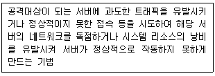

경비지도사-2차(경호학) (2011-11-13 기출문제)
1. 경호의 개념에 관한 설명으로 옳지 않은 것은?
- 형식적 의미의 경호개념은 현실적인 경호기관을 기준으로 정립된 개념이다.
- 실질적 의미의 경호개념은 학문적 측면에서 고찰된 개념이다.
- 형식적 의미의 경호개념은 경호의 개념을 본질적, 이론적인 입장에서 이해한 것이다.
- 실질적 의미의 경호개념은 경호주체가 국가, 민간에 관계없이 경호대상자를 보호하는 모든 활동을 말한다.
(정답률: 84%)

2. 경호의 이념에 관한 설명으로 옳지 않은 것은?
- 합법성 - 경호는 법적인 테두리 안에서 이루어져야 한다.
- 협력성 - 경호는 다수의 기관들이 참여하고, 국민들의 협조가 이루어져야 성공적으로 완수할 수 있는 활동이다.
- 보안성 - 경호활동을 위해서는 위해요소로부터 경호대상자나 경호주체의 움직임을 전혀 모르도록 하는 것이 바람직하다.
- 희생성 - 경호원은 정치적으로 반대 입장에 있는 요인(要人)을 경호해야 하는 상황이 있을 수 있으므로 정치적으로 중립을 유지하여야 한다.
(정답률: 76%)
3. 경계대상에 의한 경비의 분류 중 총기, 폭발물 등에 의한 인질, 살상 등 사회적 이목을 끄는 중요범죄 등의 사태로부터 발생할 위해를 예방, 경계, 진압하는 경비는?
- 재해경비
- 특수경비
- 중요시설경비
- 치안경비
(정답률: 90%)
4. 경호수준에 의한 분류 중 행사준비 등의 시간적 여유 없이 갑자기 결정된 상황에서의 경호는?
- 1(A)급 경호
- 2(B)급 경호
- 3(C)급 경호
- 4(D)급 경호
(정답률: 83%)
5. 경호활동의 원칙에 관한 설명으로 옳지 않은 것은?
- 하나의 통제된 지점을 통한 접근의 원칙이란 경호대상자에게 접근할 수 있는 출입구나 통로는 하나만 필요하고, 통제된 출입구나 통로라도 접근자는 경호원에게 허가 절차 등을 거쳐야 한다는 것이다.
- 3중경호의 원칙이란 경호대상자가 위치한 집무실이나 행사장으로부터 내부, 내곽, 외곽으로 구분하여 경호 행동반경을 거리개념으로 설명한 것이다.
- 은밀경호의 원칙이란 경호대상자의 활동에 방해를 주지 않고 타인의 눈에 잘 띄지 않게 활동하여야 한다는 것이다.
- 방어경호의 원칙이란 경호대상자를 암살자 또는 위해기도자로부터 가능한 한 멀리 떼어놓아야 하며, 경호대상자의 행사장소는 일반 대중에게 알려지지 않도록 해야 한다는 것이다.
(정답률: 87%)
6. 다음 중 구한말의 경호기관이 아닌 것은?
- 무위소
- 무위영
- 내금위
- 친위대
(정답률: 82%)
7. 대통령경호안전대책위원회의 위원이 아닌 자는?
- 문화체육관광부 관광산업국장
- 국토해양부 항공정책관
- 대검찰청 공안기획관
- 경찰청 정보국장
(정답률: 57%)
8. 대통령 등의 경호에 관한 법률상 비밀엄수 규정의 적용을 받지 않는 자는?
- 대통령 경호업무에 동원된 종로경찰서 소속 경찰관
- 대통령실 경호처에 파견근무 중인 서울지방경찰청 소속 경찰관
- 대통령실 경호처에서 퇴직 후 5년이 지난 전직(前職) 경호공무원
- 대통령실 경호처 파견근무 후 원 소속으로 복귀한 국가정보원 직원
(정답률: 83%)
9. 대통령 등의 경호에 관한 법률상의 내용에 관한 설명으로 옳지 않은 것은?(관련 규정 개정전 문제로 여기서는 기존 정답인 3번을 누르면 정답 처리됩니다. 자세한 내용은 해설을 참고하세요.)
- 대통령실장은 6급 이하 경호공무원과 6급 상당 이하 별정직 국가공무원에 대하여 일체의 임용권을 가진다.
- 5급 이상 경호공무원의 전보ㆍ휴직ㆍ겸임ㆍ파견ㆍ직위해제 등에 관하여는 대통령실장이 이를 행한다.
- 소속공무원이 경호처의 직무와 관련된 사항을 발간하고자 할 때에는 미리 대통령실장의 허가를 받아야 한다.
- 경호공무원 각 계급의 직무의 종류별 명칭은 대통령령으로 정한다.
(정답률: 87%)
10. 다음 경호의 주체 중 신분상 성격이 다른 것은?
- 정부종합청사 전투경찰순경
- 인천공항 특수경비원
- 공군부대 군무원
- 경찰청 소속공무원
(정답률: 86%)
11. 경호활동을 ‘예방-대비-대응-평가’의 4단계로 분류할 경우 대비단계의 활동에 해당되지 않는 것은?
- 행사장에 대한 안전검측과 안전 유지
- 경호위기상황에 대한 즉각적인 조치
- 행사장 취약요소에 대한 안전조치와 협조
- 행사보안유지와 지리적 취약요소에 대한 거부작전 실시
(정답률: 83%)
12. 우발상황 발생에 따른 방호 및 대피대형 형성시 우선적으로 고려할 내용으로 적절하지 않은 것은?
- 범인제압을 위한 무기의 종류와 수량
- 경호대상자와 경호원 및 위해기도자와의 거리
- 주위 상황과 군중의 성격ㆍ수
- 공격의 종류와 성격
(정답률: 82%)
13. 선발경호에 관한 설명으로 옳지 않은 것은?
- 행사장에 대한 인적?물적?지리적 정보를 수집하여 이에 필요한 지원요소 소요 판단 후 세부계획을 수립한다.
- 행사장 폭발물에 대한 안전검측을 실시하고 제반 취약요소를 분석하며 이에 대한 최종적인 대안을 제시하는 단계이다.
- 경호계획 최종 확인 및 변동사항 정리, 비상대책 확인 등 종합적인 경호활동을 점검하고, 경호지휘소를 중심으로 변동?특이사항을 점검하는 단계이다.
- 경호대상자가 집무실을 출발해서 행사장에 도착하여 행사를 진행한 후 출발지까지 복귀하는 단계이다.
(정답률: 87%)
14. 경호임무수행에 관한 설명으로 옳지 않은 것은?
- 안전점검 및 검사가 이루어진 상태를 계속 유지하기 위하여 통제작용을 하는 것을 안전유지라고 한다.
- 안전대책작용은 행사장 내?외곽 시설물에 대한 폭발물 탐지제거 및 안전점검, 각종 음식물에 대한 검식작용 등 통합적 안전작용이다.
- 정보활동 분야는 경호 관련 인원, 문서, 시설, 지역, 자재, 통신 등에 대하여 모든 불순분자로부터 완벽한 보호대책을 수립하여 이를 지속적으로 보완?유지하는 것이다.
- 행사 결과보고서는 평가 직후 계획전담요원에 의해 요원들의 메모, 일지 등의 의견을 참고하여 직면했던 문제들과 제시된 해결책에 중점을 두고 작성된다.
(정답률: 86%)
15. 근접경호에서 도보대형 형성시 우선적으로 고려할 사항이 아닌 것은?
- 행사 성격
- 인적 취약요소와의 이격도
- 행사장 사전예방경호 수준
- 이동시간 및 노면상태
(정답률: 75%)
16. 차량경호 임무수행에 관한 설명으로 옳지 않은 것은?
- 선도경호차량은 행?환차로를 안내하고, 행사시간에 맞게 주행속도를 조절하며, 전방의 각종 상황에 대한 경계임무를 수행한다.
- 경호대상자 차량 운행시 차문은 우발상황시 긴급히 대피하기 위하여 열어 두어야 하며, 도로의 중앙차선을 이용한다.
- 경호대상자는 가장 먼저 차량의 뒷좌석 오른쪽에 탑승하고 경호책임자의 안내에 따라 가장 마지막에 하차한다.
- 목적지에 도착하면 경호책임자는 가장 먼저 하차하고 출발시에는 가장 나중에 승차하며 경호대상자 승ㆍ하차시 차량 문의 개폐와 잠금장치를 통제한다.
(정답률: 84%)
17. 실내(방)의 안전검측 순서로 옳은 것은?
- 바닥 검측 - 눈높이 검측 - 천장높이 검측 - 천장내부 검측
- 천장내부 검측 - 천장높이 검측 - 눈높이 검측 - 바닥 검측
- 바닥 검측 - 눈높이 검측 - 천장내부 검측 - 천장높이 검측
- 눈높이 검측 - 천장높이 검측 - 천장내부 검측 - 바닥 검측
(정답률: 82%)
18. 경호계획 수립시 행정 및 군수사항에 포함되는 내용이 아닌 것은?
- 경호 이동 및 철수계획
- 경호복장, 장비, 비표
- 식사 및 숙박계획
- 주차장 운영계획
(정답률: 59%)
19. 경호 기법 중 기만경호에 관한 설명으로 옳지 않은 것은?
- 위해기도자에게 행사상황을 오판하도록 허위상황을 제공하는 경호기법이다.
- 기만경호에는 인물, 기동, 장소, 시간 등을 기만하는 작전을 주로 사용한다.
- 비노출 경호작전으로 경호대상자에게 불필요한 주의가 쏠리지 않게 하는 방법이다.
- 경호대상자의 차량 위치 또는 차량의 종류를 수시로 바꾸는 방법이 있다.
(정답률: 86%)
20. 경호의 안전작용에 관한 설명으로 옳지 않은 것은?
- 내부경비는 입장자와 입장중인 자에 대해 입장표지 패용 여부 등을 확인하고 계속적인 경계를 유지한다.
- 출입자 통제 관리를 위하여 차량 출입문과 도보 출입문은 단일화시킨다.
- 내곽경비는 돌발사태에 대비하여 예비대ㆍ비상통로ㆍ소방차ㆍ구급차 등을 확보한다.
- 외곽경비는 행사장 주변의 취약요소를 봉쇄ㆍ감시할 수 있는 위치를 선정하여 감시조를 운용한다.
(정답률: 72%)
21. 경호행사에서 주행사장 내부담당자의 임무로 옳은 것은?
- 차량 및 공중 강습에 대한 대비책을 수립한다.
- 접견 예상에 따른 대책 및 참석자 안내계획을 수립한다.
- 경비 및 경계구역 내에 대한 안전조치를 강화한다.
- 방탄막 설치 및 비상차량 운용계획을 수립한다.
(정답률: 86%)
22. 경호작용에서 고려되어야 할 기본적인 요소에 관한 설명으로 옳지 않은 것은?
- 모든 경호임무는 예기치 않은 변화의 가능성을 내포하고 있으므로 신중한 사전계획보다 신속한 사후대응이 더욱 중요하다.
- 경호대상자를 경호하는데 소요되는 자원은 행차의 지속시간과 첩보수집으로 획득된 내재적인 위협분석에 따라 결정된다.
- 경호임무는 명확하게 부여되어야 하며, 경호원들에게는 각각의 임무형태에 대한 책임이 부과되어야 한다.
- 경호대상자와 수행원, 행사 세부일정, 적용되고 있는 경호경비상황에 관한 보안의 유출은 엄격히 통제되어야 한다.
(정답률: 87%)
23. 경호현장의 안전검측활동에 관한 설명으로 옳지 않은 것은?
- 특수시설이나 기술적 조치가 필요한 시설의 검측은 전문가를 초빙하여 검측조에 편성하고 자문을 통해 실시하며, 기술적 분야는 전문가가 직접 안전조치하여 하자가 발생하지 않도록 한다.
- 검측작용에서 오관을 최대한 활용하나, 장비에 대한 신뢰감을 가지고 의존하여야 한다.
- 검측은 기본지식이 없어도 수행할 수 있는 일반검측과 교육을 받은 전문검측담당으로서 행하는 정밀검측이 있다.
- 검측인원의 책임구역을 명확하게 하며 중복되게 점검이 이루어져야 한다.
(정답률: 80%)
24. 선발경호에 관한 설명으로 옳지 않은 것은?
- 선발경호는 경호대상자보다 먼저 경호행사장에 도착하여 위해요소를 점검하고 안전을 확보하는 활동이다.
- 선발경호활동은 시간적 여유를 가질 수 없기 때문에 점검리스트는 간단하게 작성 및 점검하는 것이 좋다.
- 경호계획서에 근거한 전체 일정과 행사장별 세부일정 등의 기본사항을 확인하고, 이동에 관한 기본계획을 수립한다.
- 각 근무자별로 부여된 임무수행을 위한 활동계획을 세우고 점검활동을 위한 점검리스트를 작성한다.
(정답률: 81%)
25. 차량경호의 기본대형에 관한 설명으로 옳지 않은 것은?
- 한 대의 경호차량을 운용할 경우 일반적으로 후미차로 운용하지만, 상황에 맞게 적절히 변형하여 운용할 수 있다.
- 선도경호 차량은 진행방향을 결정하며 위해상황시 전방공격을 차단하는 임무를 수행한다.
- 경호대상자 차량의 운전석 옆에는 경호원이 탑승하는 것이 바람직하다.
- 선도경호 차량은 최소인력인 1명의 요원에 의해 운용되는 것이 바람직하다.
(정답률: 86%)
26. 경호임무수행에 따른 안전대책담당관의 임무가 아닌 것은?
- 안전구역확보계획 검토
- 비상 및 일반예비대 운용방법 확인
- 최기병원 확인
- 병력운용계획 및 비상대책체제 구축
(정답률: 64%)
27. 경호공무원이 무기를 사용할 때 사람에게 위해를 끼치지 않아야 하는 경우는?
- 형법상 정당방위에 해당할 때
- 형법상 정당행위에 해당할 때
- 형법상 긴급피난에 해당할 때
- 야간이나 집단을 이루거나 흉기 등을 휴대하여 경호업무를 방해하기 위하여 경호공무원에게 항거할 때 이를 방지하거나 체포하기 위하여 다른 수단이 없다고 인정되는 상당한 이유가 있을 때
(정답률: 84%)
28. 근접경호원의 복장으로 적합한 것은?
- 행사의 성격과 관계없이 경호원의 품위가 느껴지는 검정색 계통의 정장
- 보호색원리에 의한 경호현장의 주변 환경과 조화되는 복장
- 위해기도자에게 강한 인상을 줄 수 있는 색상과 장비착용에 편한 기능성 복장
- 경호대상자와 구분되는 색상이나 스타일의 복장
(정답률: 82%)
29. 경호장비의 유형별 관리에 관한 설명으로 옳지 않은 것은?
- 검색장비의 운용시 입장객을 통과시킬 때에는 개인간 간격을 최소 1m 이내로 밀착시켜 빠른 걸음으로 통과시켜야 행사가 원만하게 진행될 수 있다.
- 전자파, 초음파, 적외선 등의 광학을 이용한 기계장비는 인력부족으로 인한 경호 취약점을 보완하는 수단으로 활용된다.
- X-Ray 검색기는 경호행사장 입구에 설치하여 입장자의 휴대품 속에 숨겨져 있는 무기류를 확인하는 장비이다.
- 금속탐지기를 2대 이상 운용할 때에는 최소 3m 이상의 간격을 확보해야 한다.
(정답률: 87%)
30. 외교관 및 영사의 서열에 관한 설명으로 옳지 않은 것은?
- 공관장인 대사 및 공사 상호간의 서열은 신임장 제정 순서에 따른다.
- 대사대리 상호간의 서열은 계급에 관계없이 지명통고가 접수된 순서에 따른다.
- 공관장 이외의 외교관 서열도 외교관 계급에 따르고, 동일 계급간에는 나이 순서에 따른다.
- 같은 계급에 있어서 외교관은 무관보다 앞선다.
(정답률: 90%)
31. 정부행사시 서열 관행상 좌석배치 순서로 옳은 것은?
- 대통령 - 국무총리 - 국회의장 - 대법원장
- 대통령 - 국회의장 - 국무총리 - 대법원장
- 대통령 - 헌법재판소장 - 국회의장 - 대법원장
- 대통령 - 국회의장 - 대법원장 - 국무총리
(정답률: 85%)
32. 원인불명의 인사불성 중 얼굴이 붉은 환자의 상태와 일반적인 응급처치에 관한 설명으로 옳지 않은 것은?
- 주요 증상은 맥박이 약하고, 구토를 할 경우 얼굴을 옆으로 돌려 준다.
- 환자를 바로 눕히고 머리와 어깨를 약간 높여 안정시킨다.
- 머리에 찬 물수건을 대어 열을 식혀 주어야 한다.
- 환자를 옮길 필요가 있으면 눕힌 상태로 주의해서 운반한다.
(정답률: 73%)
33. 사고현장의 응급처치에 관한 설명으로 옳지 않은 것은?
- 긴급환자를 우선 조치하고, 환자의 인계, 증거물이나 소지품을 보존한다.
- 쇼크에 대한 조치는 기도유지, 척추고정, 지혈, 적정자세 유지가 중요하다.
- 출혈부위는 심장보다 높게 하며, 물을 충분하게 주어 갈증을 해소시켜야 한다.
- 절단된 부위는 무균드레싱 후 비닐주머니에 넣어 물과 얼음이 담긴 용기에 넣어 운반한다.
(정답률: 86%)
34. 경호원의 의전과 예절에 관한 설명으로 옳은 것은?
- 여성과 남성이 승용차에 동승할 때에는 남성이 먼저 타고, 하차 시에도 남성이 먼저 내려 차 문을 열어준다.
- 상급자와 하급자가 승용차에 동승할 때에는 상급자가 먼저 타고, 하차 시에도 상급자가 먼저 내린다.
- 기차에서 두 사람이 나란히 앉는 좌석에서는 창가 쪽이 상석이다.
- 비행기를 타고 내릴 때에는 상급자가 먼저 타고 먼저 내린다.
(정답률: 83%)
35. 암살범의 일반적인 심리적 특성에 해당하지 않는 것은?
- 암살범은 자기 자신을 학대하는 경향이 있다.
- 암살범은 적개심과 과대망상적인 사고를 소유한 자들이 많다.
- 암살범은 허황적인 사고와 행동에 빠지기 쉬운 자들이 많다.
- 암살범은 외모에 의해 식별하기 곤란할 정도로 단정하다.
(정답률: 76%)
36. 테러에 관한 설명으로 옳지 않은 것은?
- 테러는 특정한 위협이나 공포로 인해 극도로 불안한 심리적 상태를 일컫는다.
- 국가대테러활동지침상 테러는 국가안보 또는 공공의 안전을 위태롭게 할 목적으로 행하는 행위라고 정의하고 있다.
- 테러리즘의 발생이론 중 동일시 이론은 열망적ㆍ점감적ㆍ점진적 박탈감 등을 테러의 원인으로 설명하고 있다.
- 국제테러란 타국과 연관되어 정치적ㆍ종교적 목적 달성을 위해 조직적ㆍ체계적 무력과 폭력적 수단을 행사하는 것이라고 할 수 있다.
(정답률: 70%)
37. 국가대테러활동지침상 테러대책기구에 관한 설명으로 옳지 않은 것은?
- 테러대책회의의 의장은 국무총리가 된다.
- 테러대책회의의 위원은 환경부장관과 국토해양부장관도 포함된다.
- 테러대책상임위원회의 정기회의는 원칙적으로 월 1회 개최한다.
- 대통령 소속하에 테러대책회의를 둔다.
(정답률: 69%)
38. 테러조직의 유형 중 지도자조직의 임무는?
- 지휘부의 정책수립
- 테러리스트의 비호ㆍ기만
- 자금획득
- 무기ㆍ탄약 지원
(정답률: 86%)
39. 테러공격의 수행단계를 옳게 나열한 것은?
- 정보수집 및 관찰 → 공격계획 수립 → 공격조 편성 → 공격준비 → 공격실시
- 공격준비 → 공격계획 수립 → 공격조 편성 → 정보수집 및 관찰 → 공격실시
- 공격계획 수립 → 공격조 편성 → 공격준비 → 정보수집 및 관찰 → 공격실시
- 공격조 편성 → 공격준비 → 공격계획 수립 → 정보수집 및 관찰 → 공격실시
(정답률: 87%)
40. 다음에서 설명하고 있는 사이버테러 기법은?

- 논리폭탄
- 서비스 거부
- 트로이 목마
- 트랩도어
(정답률: 57%)